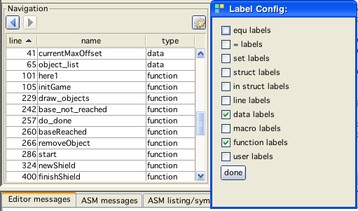
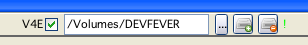

vedi window
vedi window
double click on a "include" tries to load the denoted file in an editor tab
search and replace works
tab, shiftab works as "indent"
middle mousebutton double click on a label/macro/variable jumps to the definition of that entity
there is a "pretty print" button for 6809 sources (only)
you can define and use up to 10 bookmarks
you can configure you syntax coloring settings

Create a new project or create an empty file.
Special:
If in file system view pressing "shift"-new will create a "default" project on the current selected assembler file.

Refresh the current display tree (if you externally added files - e.g.).
Special:
Pressing "shift"- refresh will switch the tree to a filesystem view within the Vide directory.
 Load a file.
Load a file.
Pressing shift with the button, will reload the current edited file.
 Save the current file.
Save the current file.
Pressing shift with the button, will "save as" - opens a file dialog.

Pretty print the current source (assembler only).

Increase font size of editor.

Decrease font size of editor.
The other buttons should be selfexplanatory.
Pressing the button: 
starts the assembler with the current active file as input (file is automatically saved). If successfull, vecxi will automatically be started.
The messages of assi can be viewed in the bottom tab called "ASM messages":

message window
Pressing the button: 
starts debugging the assembler with the current active file as input (file is automatically saved). If successfull, vecxi will automatically be started.
The messages of assi can be viewed in the bottom tab called "ASM messages". A breakpoint will be set automatically to the first valid instruction of the cartridge - dissi will popup and you can debug right away.
Pressing the button: 
starts the assembler with the current active file as input (file is automatically saved) and if successfull (and a vecxi instance is already running) injects the built binary file into the currently running vecxi. Vecxi is not reset while doing this, you just "change" the cartridge ROM while running. You can thus experiment with changes to your bin file on the fly without losing RAM data, PC address or breakpoints.
You can enter simple "expression" and use the ask field as a small calculator. Conversion between decimal, binary and hex is also supported.
You can enter names of (Bruce Tomlin - defined) BIOS routines, and a (stay on top) window displays a small help
You can enter Assembler mnemonics, and a help for the directive will be displayed
Placing the cursor over such a "text" within the source, will do the same.
error messages are colored red
warning messages are colored blue
optimization messages are colored green
info messages are colored black
Error/Warning/Optimization messages are related to the assembled source. They always consist of two lines of information:
Line 1: What happened?
Line 2: Where did it happen?
Doubleclicking on any of the two lines will jump to the source (will also open include files, if message is about an include).
The third tab on the bottom contains the listing output of the assembler. The Error/Warning/Optimization messages are also included in the "correct" places in the listing (although not double clickable to any effect).
VIDE uses "Syntax" programmed by (c) Stephen Ostermiller. I slightly changed some code and did a flex grammar that covers some aspects of assi. This was my first contact with flex and grammars, so the results are not 100% and probably not very efficient either.
The expressions that are possible with parenthesis and macro usage are IMHO nearly impossible to cover with a regular expression based scanner. After all, who would identify an opcode lda that is puzzled together by a macro, like:
fillregister macro reg, val
ld\1 #val
endm
fillregister a, 1 ; set a to 1
fillregister b, 2 ; set b to 2

syntax example window
Using SHIFT and CTRL (windows/linux) or CMD (apple) "1"-"0" you can define bookmarks. Using CTRL (windows/linux) or CMD (apple) "1"-"0" you can jump to defined bookmarks.
Bookmarks are also listed in the corresponding "bookmark" tab at the bottom (you can also double click the table to jump to a bookmark)
Bookmarks can be used "accross" files.
You can set and delete "simple" breakpoints (pc reaches the location) by clicking on the line number you want to set a breakpoint to. The line number will be shown in red. Clicking the line number again will switch the breakpoint off (toggle). The breakpoints are "file" related - vedi will remember breakpoints by the filename (path) it as set to. All "vedi"-breakpoints are also listed in a table under the tab "breakpoints" at the bottom. Double click on a breakpoints jumps to the file and location of that breakpoint. A popup on the table allows to delete breakpoints from the table.
You access a popup menu in the editor. You can chose to add a watch (for your next vecxi/dissi run) for the word you "popped up on". The popup is rather dumb, it adds a watch for anything that you chose - it does no testing whether it actually is a correct label.
Watches are added at the start of vecxi execution in the form of "hey dissi" comments for the corresponding line. In dissi however you will see only watches that make sense (meaning: for labels that actually exist).
All watches for the current file are listed at the bottom on the "watches" tab.
Note:
Breakpoints and watches can only defined for the next instance of emulation. You can not add/change/delete breakpoints or watches from the editor for the current running vecxi instance. You have to do that from dissi!

Navigation panel
The panel includes mainly two functions:
a history
Since on some occasions you can jump to other places in the editor (using bookmarks, breakpoints or middle-doubleclick on labels) I find it sometimes annoying to not easily go back.
The history solves that. You can go back and forth in the history of your jumps at your will. The file and the line number will be remembered and you can go back to the place you edited before.
Use the new arrow buttons (on the navigation panel) to navigate back and forth.
a listing of labels
In the navigation panel a table of labels of the current edited file is listed. A double click on the label jumps to the corresponding location in the file.
Now - in (at least my) usual assembler files there are heaps and heaps of labels. So even displaying just labels might be not much help - because there are so many of them.
For that reason you can configure WHAT kind of labels are displayed. Following distinctions are be made:
equ - labels [resulting from "Variable equ 16"]
"=" - labels [resulting from "Variable = 16"]
set - labels [resulting from "Variable set 16"]
struct - labels [resulting from "struct SomeStruct"]
in struct - labels [resulting from " ds Var, 2" (while in struct definition)]
line - labels [labels starting an assembler line]
data - labels [labels starting an assembler line, and a data statement follows (db, dw, ds, fcb . . . )]
function - labels [labels starting an assembler line, after a "closure" (last line was rts, bra, jmp . . .)]
user - labels [the comment of the line has the mark "#isFunction"]
All of these different kind of labels can be configured to be shown - or not. Especially if you build new code and mark all your "interesting" sections with the user label - you can navigate really efficiently in your code!
CTRL (windows/linux) or CMD (apple) "J" jumps to a line number.
CTRL (windows/linux) or CMD (apple) "R" reapplies syntax highlighting.
F5 runs the current project/file, F6 debugs the current project/file (same as the buttons).

VecFever support
In the upper bar of Vide there are the shown gui elements.
To use the VecFever in Vide for rapid development do the following:
insert VecFever into Vectrex
switch vectrex on
insert usb cable
Do not do it the other way around (first usb, than vectrex on - since than you use the VecFever as an USB-Drive, for our purpose that is not what we want, we want to use it as a RAMDISK)
enable VecFever support by checking the V4E checkbox
(first time only - if the Volume does not change) press the "..." button and select the RAMDISK volume, this should always be named DEVFEVER
after a few seconds press "seek connection" (connection must be established, that may take a few seconds)
in the message window below should be a message "V4E: RAM DISK volume found.", if not wait some more and try again
if it still doesn't work - I don't know :-(
If you assemble a binary now, the following will happen, depending on your configuration:
Config Miscellaneous "automatically eject attached VecFever on compile success": checked
the compiled binary will be copied to the RAMDISK with the required name "cart.bin"
the RAMDISK will be ejected (at least under windows and mac)
if the VecFever is configured right, the binary will at once start on the vectrex
pressing reset on the vectrex will return to RAMDISK status and vide will again be ready to compile and transport to RAMDISK (no further setup needed)
Config Miscellaneous "automatically eject attached VecFever on compile success": unchecked
the compiled binary will be copied to the RAMDISK with the required name "cart.bin"
you can now either eject the RAMDISK by using the "eject" button or your system
or (if VecFever was configured such) press button 4 and start the binary on your vectrex